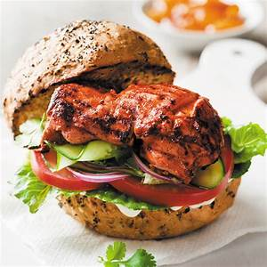

Chicken Tandoori Burger
By Rida Aftab

Ingredients
- Chicken 1/2 kg(boneless)
- Burger bun 4
- Chaat masala1/2 tsp
- Red chili
powder 1/2 tsp
- Ginger garlic paste1 tsp
- Salt as required
- Lemon juice 1 tbsp
- Yellow food color 1 pinch
- Mustard paste 1/2 tsp
- Cumin seeds 1 tsp (fried
and chopped)
- Oil for frying
- Mayonnaise1 tbsp
- Chili garlic sauce 2 tbsp
- Lettuce leaf as required
- Cucumber as required
- Tomato as required
Cooking Directions
- In a bowl, add chicken, chaat masala, red chili powder, ginger garlic paste, salt, lemon juice, yellow
food
color, mustard paste and cumin seeds.
- Marinate for one hour.
- Heat oil and fry chicken, also toast
the burgers bun on griddle.
- Spread mayonnaise, chili garlic sauce and also place chicken piece on the
bun.
- In the end place lettuce leaves, cucumber and tomatoes.
- Cover with another piece of
burger.
- Ready to serve.